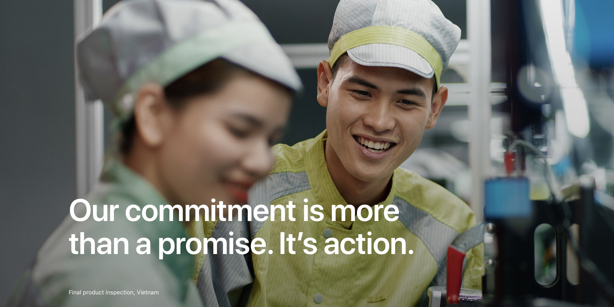
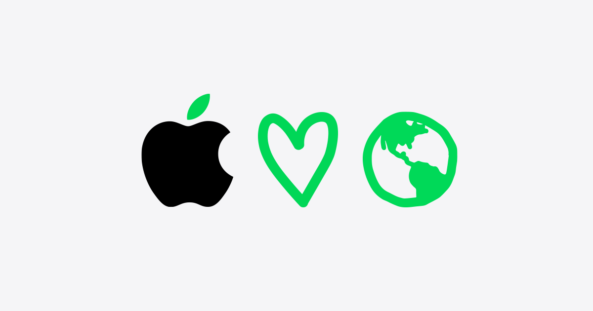
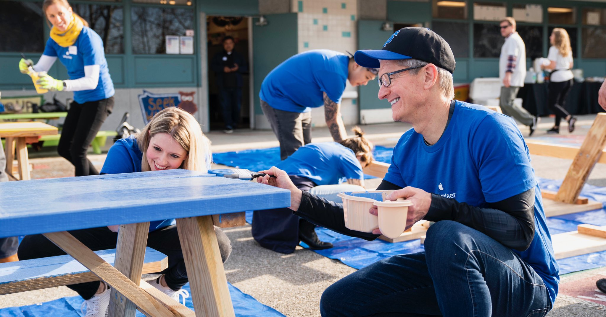

Apple's Stance on Corporate Social Responsibility

Apple's Commitments to Social Responsibility and Sustainability
Apple is committed to using its influence and resources to promote social responsibility and sustainability.
Here are some of the ways that Apple is fulfilling this commitment:
- Renewable Energy: More than 250 suppliers operating across 28 countries are committed to using renewable energy for all Apple production by 2030.
This represents more than 85 percent of the company’s direct manufacturing spend and more than 20 gigawatts in commitments.
- Supply Chain Responsibility: Apple is committed to respecting the highest standards of labor, human rights, environmental,
and ethical conduct. Apple’s suppliers are required to provide safe working conditions, treat
workers with dignity and respect, act fairly and ethically, and use environmentally responsible
practices wherever they make products or perform services for Apple.
- Privacy and Security: Apple is committed to protecting the privacy and security of its users' data and information.
The company uses encryption and other security measures to protect user data, and has been a vocal advocate for strong privacy protections in the tech industry.
Apple has also worked to minimize the amount of data it collects from users, and has introduced new features such as App Tracking Transparency to give users more control over their data.

Environmental Initiatives and Achievements
Apple recognizes the importance of environmental sustainability and has taken steps to reduce its carbon footprint and promote sustainable practices.
Here are some of the company's environmental initiatives and achievements:
- Carbon Neutrality: Apple has achieved carbon neutrality for all of its operations, including manufacturing and transportation.
The company has reduced its carbon footprint through a variety of measures, such as using renewable energy,
improving energy efficiency, and reducing waste. Apple has also committed to becoming carbon neutral across its entire supply chain by 2030.
- Product Recycling: Apple has a product recycling program that allows customers to recycle their old Apple devices for free called Apple Reuse.
Apple also works with third-party recyclers to recover materials from old devices and reuse them in new products.
In 2020, Apple recovered more than 81,000 metric tons of materials from its recycling program, including 7,000 metric tons of cobalt and lithium from iPhone batteries.

Community Outreach and Philanthropic Efforts
Apple is committed to supporting the communities in which it operates and has a long history of philanthropy and community outreach.
Here are some examples of the company's community outreach and philanthropic efforts:
- Educational Programs: Apple has developed a variety of educational programs and resources to help students and teachers learn and innovate with technology.
For example, the company's Everyone Can Code program teaches coding skills to students of all ages and backgrounds,
and the Apple Teacher program provides professional development resources for educators.
- COVID-19 Response: Apple has contributed to the global response to the COVID-19 pandemic by donating medical supplies,
funding research efforts, and developing new technologies to support public health.
In 2020, Apple donated more than 30 million masks to healthcare professionals and developed a COVID-19 screening tool in partnership with the CDC and FEMA.
- Diversity and Inclusion: Apple is committed to promoting diversity and inclusion in its workforce and in the tech industry as a whole.
The company has implemented a variety of programs and initiatives to increase diversity and representation,
such as the Apple Diversity and Inclusion website and the Apple Leadership Institute.
- Philanthropic Giving: Apple has a long history of philanthropic giving and has donated millions of dollars to organizations around the world.
In 2021, Employee donation and volunteering programme raises nearly $725 million over the last decade as part of Apple's Employee Giving programme.